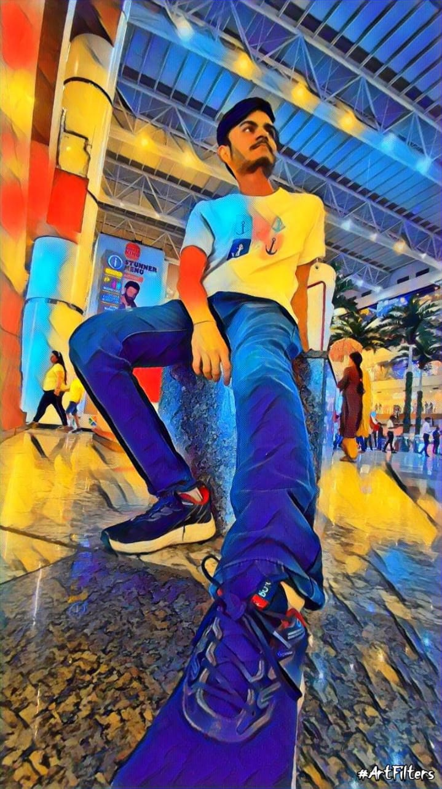

About me


Why I choose to be a designer?
From my childhood I was interested in arts and crafts, credit goes to my hero Harun Robert. I used to watch his show MAD STUFF WITH ROB and build stuff.
Later in life, I choose to learn to code, thinking of it as a tool to build something which will be able to solve problems. But sadly, that’s not what coding is. It is about problem-solving, but the technical one. In real life, there is another group of people who are at the forefront of solving problems related to design and human psychology, we call them designers.
In my 3rd year of college, I learned about product design, prototyping, user research, and UX design, I felt that this is the field where I can be more useful and impactful. I can enjoy both my liking for computers and my love for art and crafts.
So I decided to get some experience and see if it is for me or not. I did my first internship and knew that this is something I can do, of course sometimes it is really difficult and mind-numbing to find a solution, but this is what makes it interesting and challenging.
Naturally, I am good at observing human behaviour. I am Continuously working on my weak spots and improving my strengths. In my free time, you will find me listening to Steve Jobs's interviews and reading about how our body and mind work.
Skills
Design thinking, User flow development, User Interface designing, Ability to collaborate with stakeholders of different domains, Excellent understanding of human psychology, Emotional Intelligent
Education
BTech in Information Technology from GGSIPU University (2020 passout)